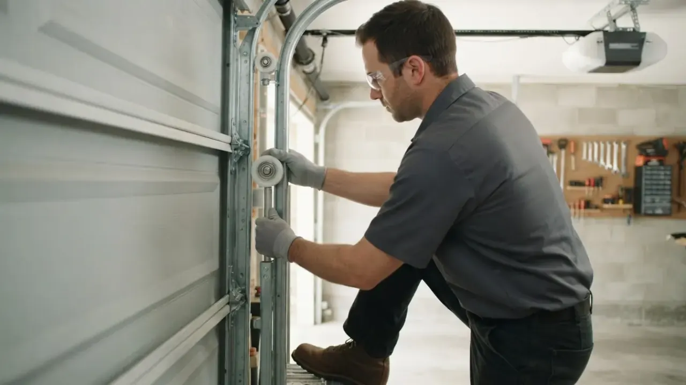

Quiet, smooth rolling doors restored fast by local pros
Garage Door Roller Repair in Tampa
Roller repair in Tampa brings back quiet, smooth operation to the door. Grinding, squealing, or jerking rollers are replaced with nylon or steel rollers that match the door's weight and track. Homeowners across Hillsborough County, from South Tampa to New Tampa, get same-day appointments and upfront pricing. Call and the door will be rolling like new.
Live dispatcherUpfront optionsBacked workmanship
The basics
What Is Garage Door Roller Repair?
The door rides up and down on small wheels called rollers, and roller repair is the fix when those wheels fail. They wear out, crack, and seize, and the door turns noisy, jerky, or stuck. Rattling, grinding, uneven movement, or rollers that look worn, chipped, or wobbly in the track all point to the same job: swap the bad rollers for new steel or nylon ones and check the tracks and hinges so the door glides again.
What's included
What Our Roller Repair Includes
Every roller repair job includes a full inspection, new rollers, lubrication, and a safety test. No corners are cut. Here is what comes with the booking.
Full Roller Replacement
All worn rollers are replaced with high-quality nylon or steel rollers. The roller is matched to the door's weight and track type, which keeps operation smooth and quiet.
Track Inspection and Alignment
The vertical and horizontal tracks are checked for dents, debris, or misalignment. Loose bolts are tightened and adjustments are made as needed. Proper tracks are essential for roller performance.
Lubrication of Moving Parts
A professional-grade garage door lubricant goes on the rollers, hinges, and springs. It reduces friction and noise, and messy oils that attract dirt are avoided.
Safety System Test
Photo eye sensors and the auto-reverse feature are tested. The door must reverse when it hits an object. That matters for safety, especially with kids and pets.
Opener Force Adjustment
New rollers reduce resistance, so the opener's force settings are adjusted. That prevents strain on the motor and extends its life. The remote and wall button are tested too.
Cleanup and Warranty
All debris is cleaned up and the garage is left tidy. A one-year warranty on parts and labor comes with it, plus tips to maintain the rollers.
Service overview
What Garage Door Roller Repair in Tampa Involves
Roller repair means pulling worn or damaged rollers out of the hinges and tracks and fitting new ones that glide. The rollers are small nylon or steel wheels running inside the vertical and horizontal tracks. Grit, humidity, and heavy daily use wear them down until the door resists and complains. Each roller is checked, the bad ones go, and the tracks get lubricated so the door runs quiet and safe. Most jobs take one to two hours.
Tampa's humid climate and salt air accelerate roller wear, especially in neighborhoods near the bay like Davis Islands and Bayshore Gardens. A grinding noise or a shaking door likely means a roller fix is needed. Ignoring it can damage the tracks and opener. Torsion springs, cables, and hinges are checked while on site too.

How we workWe verify the cause, compare realistic options, and confirm the repair before we leave.
The service timeline
Our Garage Door Roller Repair Process
Roller work follows a set order, though the fault decides the details. Five steps carry it from the first call to the final test.
Phone Diagnosis
Call and describe the noise or the problem. A few questions identify whether it is rollers, springs, or tracks. A same-day or next-day visit is scheduled at a convenient time, with a two-hour arrival window and a call when the tech is on the way.
On-Site Inspection
The technician arrives in a fully stocked truck. All rollers, hinges, tracks, cables, and springs are inspected. The worn parts are shown and what needs replacing is explained. A flat-rate price comes before any work begins, with no surprises.
Roller Replacement
A roller removal tool pops out old rollers without bending the hinges. New nylon or steel rollers go in based on the door's weight and track type, and each roller is checked for smooth movement. This step takes 30 to 45 minutes.
Track and Hardware Check
While on site, the tracks are inspected for dents or misalignment. Bolts are tightened, moving parts are lubricated with garage door lubricant, and the balance of the door is tested. A frayed cable or weak spring is pointed out when spotted.
Final Test and Cleanup
The door runs up and down several times, with the opener and safety sensors tested. Quiet and smooth is confirmed. Then all debris is cleaned up and roller maintenance is shown. A written warranty on parts and labor comes with it.
Tools & methods
Tools and Methods We Use
Roller work is only as good as the gear behind it. These are the tools that let the job be done right the first time.
Garage Door Roller Removal Tool
Old rollers pop out without bending the hinges. That saves time and prevents damage to the door.
Garage Door Track Bender
Bent tracks are straightened so rollers glide smoothly. It is used to fine-tune track alignment.
Garage Door Winding Bars
Torsion springs are adjusted safely when needed. Springs are never worked on without them.
Garage Door Lubricant
A lithium-based lubricant protects rollers, hinges, and springs. It does not attract dirt the way oil does.
Garage Door Sensor Alignment Tool
Photo eye sensors are aligned so they are perfectly placed. That prevents the door from reversing unexpectedly.
Garage Door Torque Wrench
Bolts are tightened to manufacturer specs. That prevents loose hardware that can cause rollers to bind.
Use cases
When to Call for Roller Repair
Roller calls in Tampa follow a few familiar patterns. These are two recent ones, and how each was handled.

Off-Track Door Rescued
A roller popped out in a New Tampa home, causing the door to get stuck halfway. The homeowner could not close it, and the track was slightly bent. The door was reset, the damaged roller was replaced, and the track was straightened with a track bender. Two other worn rollers were replaced too.
Smooth and Safe for a Family
A family in Seminole Heights had a door that jerked and sometimes reversed for no reason. The rollers were worn, and the safety sensors were misaligned. New nylon rollers went in, the photo eye sensors were aligned, and the opener force was adjusted.
Problems we solve
Common Roller Problems We Solve
Noisy, grinding, or stuck rollers are more than an annoyance. They can lead to bigger, costlier problems. All of them are fixed here.
Noisy garage door rollers
Worn rollers are replaced with quiet nylon ones and the tracks are lubricated. Most doors become noticeably quieter immediately. Springs and hinges are checked for noise too.
Door shakes or jerks when opening
Each roller is inspected and any that do not spin freely are replaced. Tracks are aligned and the door is balanced. The result is smooth, even travel.
Rollers come off track
The roller is reset and any bent track is repaired. A damaged roller is replaced. The other rollers are checked for wear too.
Rusted or corroded rollers
Rusted rollers are replaced with nylon or galvanized steel ones. A protective lubricant is applied. That extends roller life in coastal areas.
Pricing process
Garage Door Roller Repair Cost in Tampa
$120 - $250 for standard roller replacement
Number of Rollers
Count the rollers and the price follows: a single-car door carries 10 to 12, a double-car door 16 to 20. More rollers means more parts and more labour.
Roller Type
Nylon runs quieter and costs a little more than steel. Steel is the cheaper option, but it is noisier and rusts faster in Tampa's climate.
Track Condition
When tracks are bent or misaligned, sections may need repair or replacement. That adds to the cost but is necessary for smooth operation.
Cost factors at a glance
| Cost factor | What affects the price |
|---|---|
| Typical range on this page | $120 - $250 for standard roller replacement |
| Number of Rollers | Count the rollers and the price follows: a single-car door carries 10 to 12, a double-car door 16 to 20. |
| Roller Type | Nylon runs quieter and costs a little more than steel. |
| Track Condition | When tracks are bent or misaligned, sections may need repair or replacement. |
Ranges are the ones stated on this page; you get a written estimate before work starts.
Customer reviews
What Tampa Homeowners Say
★★★★★
“Our garage door sounded like a freight train. The technician replaced all the rollers in about an hour. It's whisper quiet now. He also lubricated the tracks and checked the springs. Fair price, no upsell. I'd recommend them to anyone in South Tampa.”
★★★★★
“I called at 9 AM and they were here by 1 PM. The rollers were worn flat. They installed new nylon rollers and adjusted the opener force. The door runs smoother than it has in years. Great same-day service.”
★★★★★
“Our old steel rollers were rusted from the humidity. They replaced them with nylon ones and fixed a bent track. The door is so much quieter. They cleaned up everything and even programmed our remote. Very professional.”
Book with confidence
What to Look for Before You Book
Before you book a roller repair, a few simple checks keep a small job from turning into a surprise bill.
- The licence number is asked for before work starts and matched to the name on the quote.
- Recent reviews get read for punctuality, pricing, and follow-up, not just the star rating.
- The price arrives in writing before work starts, parts and labour included, with an answer on what happens if more work is found once the door is open.
- Warranty cover for parts and work, and its length, comes in writing.
- A marked vehicle and a technician able to say who they are and which company sent them.
- The price should include a safety test and a walkthrough at the end, so the door is seen working before they leave.
Know your parts
Nylon vs Steel Rollers: What Is on Your Door Now
Most Tampa garage doors run on one of two roller types, and knowing which you have explains a lot about the noise and wear you are seeing. Steel rollers are the older standard: a steel wheel on a steel stem, usually with unsealed bearings. They are tough, but they are loud, and once the bearings dry out they grind against the track. Nylon rollers have a nylon tire around a steel core, often with sealed ball bearings. They run far quieter, which matters in a Tampa home where a bedroom sits over the garage, and the sealed bearings keep dust and humidity out.
You can tell which you have by looking at the rollers in the track with the door closed. Steel rollers are bare metal, often rusty at the edges. Nylon rollers are usually black or white plastic-looking wheels. Age matters too: a door built in the 1980s or 1990s almost certainly has steel rollers, and by now those bearings are usually worn flat on one side. When we repair rollers, we check the type, the bearing condition, and the stem, because a nylon upgrade is often the right call at the same time as the repair, and it is one of the cheapest ways to make an old door run quietly.
- Steel rollers: loud, durable, and common on older doors, but the unsealed bearings wear and rust in Tampa humidity.
- Nylon rollers: quiet, with sealed bearings that resist dust and moisture, and the usual recommendation when replacing.
- Stem length: rollers come in short and long stems, and the wrong stem lets the roller wobble in the track.
- Wheel size: most residential doors use 2-inch rollers, while heavier doors need larger wheels to carry the load.
- Bearing check: spin the wheel by hand. A good bearing spins freely and quietly; a bad one grinds, wobbles, or does not spin at all.
Diagnosis
How a Technician Diagnoses Roller Trouble
Roller trouble announces itself before it becomes a breakdown, if you know what to listen for. The technician starts with the door running: a rhythmic thump once per panel usually means one roller is flat-spotted or seized, while a constant grinding points to several worn bearings at once. Then the door is disconnected from the opener and moved by hand, so the technician can feel each roller pass through the track. A roller that sticks, jumps, or drags at the same spot every time is the culprit, and the track is checked at that point for dents or bends that may have caused it.
Next comes the hands-on check. Each roller is inspected for a cracked or chipped wheel, a bent stem, and play in the bearing. The stem is checked where it sits in the hinge, because a bent stem lets the roller sit crooked in the track and wear one edge of the wheel. The track itself is checked for alignment and for rust, since a rusty track eats rollers quickly in Tampa garages that trap humidity. Only after all of that does the technician decide whether the rollers can be repaired, for example by cleaning and lubricating a stiff bearing, or whether they need replacing.
- Listen first: a repeating thump, squeal, or grind that lines up with the door panels points at the rollers.
- Move it by hand: with the opener disconnected, a good door glides. A sticking point that repeats at the same height is a roller fault.
- Check the wheel: chips, flat spots, and cracks in the wheel mean replacement, not lubrication.
- Check the stem: a bent stem makes the roller run crooked and wear the track, and it must be straightened or replaced.
- Check the track: a dented or rusty track will destroy new rollers, so the track is fixed first.
Repair or replace
Roller Repair vs Roller Replacement: The Call We Make on Site
Not every bad roller needs replacing, but most do, and the honest call depends on what is actually wrong with it. A roller that is simply dry or dirty can often be brought back with a proper cleaning and a silicone-based lubricant, and it will run quietly again. A roller that has slipped out of its hinge seat can be reseated and secured. Those are genuine repairs, and they cost far less than a full set of rollers.
Replacement is the right call when the wheel is chipped, cracked, or worn flat, when the bearing is seized or wobbling, or when the stem is bent. A single failed roller can be replaced on its own, but when several are worn, replacing the full set makes more sense: the rollers have all done the same number of cycles, so the next one will fail soon after the first, and a matched set runs evenly and quietly. We will show you the worn rollers and explain the choice before we fit anything, and the price is agreed before the work starts.
- Repair it: a dry, dirty, or reseatable roller with a sound wheel and bearing.
- Replace it: a chipped, cracked, or flat-spotted wheel, a seized or wobbling bearing, or a bent stem.
- Replace the set: when three or more rollers are worn, because the rest are close behind.
- Upgrade the material: swapping old steel rollers for sealed-bearing nylon rollers while the door is apart.
- Fix the cause: a bent track or a misaligned hinge that is destroying rollers gets fixed first, or the new rollers will fail the same way.
Knock-on damage
What Bad Rollers Do to the Rest of Your Door
Rollers look like a small part, but they carry the whole door, and when they fail the damage spreads. A seized roller drags in the track instead of rolling, which wears a groove in the track and puts extra load on the opener. Over weeks that extra load strains the opener motor and the drive gear, and it is a common reason an opener that was fine starts struggling or stops lifting the door. A roller that has jumped out of the track can jam the door halfway, and forcing it from there can bend a panel or snap a cable.
The damage is worse in Tampa because humidity speeds up the rust that seizes bearings in the first place, and because many garages here are used as the main entrance, so the door cycles far more often than a door that only opens for a car. A roller problem that starts as a squeak becomes a grinding track, a strained opener, and eventually a door off its tracks if it is ignored for months. That is why a roller repair is worth doing when the noise starts, not when the door stops moving.
- Track wear: a dragging roller grooves the track, and a grooved track then wears every roller that passes over it.
- Opener strain: extra friction makes the opener work harder, shortening the life of the motor and the drive gear.
- Cable stress: a jerky, uneven door loads the lift cables unevenly, which can fray them.
- Panel stress: a jammed roller can twist a panel out of square, and a twisted panel never seals properly again.
- Off-track risk: a roller that leaves the track can drop the door, which is a safety hazard for anyone standing under it.
After the fix
Lubricating Rollers the Right Way After a Repair
New or repaired rollers need the right lubrication to last, and the product matters more than most homeowners expect. A silicone-based garage door lubricant is the right choice for rollers, because it stays slippery without attracting dust. White lithium grease suits metal-to-metal points, but it is too thick for roller bearings. Standard WD-40 should never be used on rollers: it is a solvent that strips the grease out of bearings and then evaporates, leaving them drier than before. Cooking oil and household oil are worse, because they go gummy in Tampa heat.
The method is simple. With the door closed and the opener disconnected, spray the lubricant on the roller stems where they meet the hinges, and on the bearings, then run the door a few times to work it in. Wipe the tracks clean with a damp cloth, and do not grease them, because grease in a track collects dust and turns into grit that wears the rollers. Lubricate twice a year, in spring and in autumn, and more often if the door is used heavily. A roller that is lubricated properly will run quietly for years; a roller that is lubricated with the wrong product will fail early, and the repair will have been wasted.
- Silicone lubricant: the right product for rollers, because it does not attract dust.
- Never WD-40: it strips grease from bearings and leaves them drier than before.
- Never household oil: cooking oil and general-purpose oil go gummy in Tampa heat.
- Tracks stay clean: wipe them with a damp cloth, and never grease them.
- Twice a year: spring and autumn, and more often for a heavily used door.
Why are my garage door rollers so noisy in Tampa?
Tampa's humidity and salt air cause rollers to dry out and collect grit, which makes them grind and squeal. Most rollers last 5 to 7 years here, less if you're near the bay. Replacing them with nylon rollers and lubricating the tracks usually solves the noise. If the noise persists, your springs or opener may be the issue.
How much does garage door roller repair cost in Tampa?
Most Tampa homeowners pay $120 to $250 for a full set of rollers installed, including labor and lubrication. Cost depends on door size, roller type (nylon vs. steel), and whether tracks need adjustment. We give you a flat-rate quote before we start. There's no charge for the estimate.
Can I replace garage door rollers myself in Tampa?
You can, but it's risky. Rollers are under tension from the springs and cables. If you release the wrong bolt, the door can crash down. You also need a garage door roller removal tool to avoid bending hinges. Most homeowners find it safer and faster to call a pro. We do it in under an hour.
Who repairs garage door rollers in Tampa?
We do. Our technicians repair and replace rollers for all major brands, including Clopay, Amarr, and Wayne Dalton. We serve Tampa and Hillsborough County with same-day appointments. Call us and we'll diagnose the problem over the phone and schedule a visit.
What is the difference between steel and nylon garage door rollers in Tampa?
Steel rollers are strong and suit heavy doors, but they are noisier and can rust. Nylon rollers run much more quietly and will not rust, which suits Tampa humidity, but they wear faster on very heavy doors. The technician checks the weight of your door and the condition of the tracks before recommending one or the other. For most Tampa homes, nylon rollers are the quieter choice.
How often should garage door rollers be checked in Tampa?
Rollers should be inspected at least once a year, as part of a tune-up or maintenance visit. A door that is used several times a day wears rollers faster, so a twice-yearly check makes sense for busy households. The technician looks for cracks, flat spots, and wobble in the track, and worn rollers are cheap to replace before they damage the track.
Can worn garage door rollers damage the tracks in Tampa?
Yes. A cracked or seized roller does not roll, it drags, and that wears a groove in the track and can bend it out of shape. A wobbling roller can also jump out of the track entirely. Replacing worn rollers early protects the tracks, which cost far more to repair than a set of rollers.
How long do garage door rollers last in Tampa?
A set of nylon rollers with sealed bearings usually lasts 10 to 15 years on a typical Tampa door, while older steel rollers often wear out sooner, especially if they are never lubricated. Tampa humidity speeds up rust in unsealed bearings, and a door that is used many times a day will wear rollers faster. A roller that grinds, wobbles, or has a chipped wheel has reached the end of its life and should be replaced rather than lubricated.
Can I replace just one garage door roller?
Yes, a single failed roller can be replaced on its own, and that is often the right call when the rest of the set is in good shape. But if three or more rollers are worn, replacing the full set is usually better value, because the remaining old rollers have done the same number of cycles and will fail soon after. The technician will show you the condition of each roller so you can decide.
Why is my garage door so loud all of a sudden?
A sudden change in noise usually means a roller bearing has seized or a wheel has chipped. Steel rollers get much louder as their bearings dry out, and a flat spot on one wheel makes a thump on every pass. Lubrication helps a dry roller, but it will not fix a chipped wheel or a seized bearing. If the noise started suddenly, book a check before the bad roller damages the track.
Related services
Related Services

Garage Door Repair
Failed rollers can pull a door off its track or stop it altogether. General garage door repair covers the whole system, from small adjustments to bigger fixes, and gets the door back in shape fast.
Garage Door Spring Repair
Worn rollers put extra stress on torsion springs. When a spring breaks, it is replaced with a cycle-tested spring that matches the door's weight. Cables and drums are inspected while on site.
Garage Door Opener Repair
Bad rollers can burn out the opener motor. When a LiftMaster or Genie opener is straining, gears, logic boards, and remotes are repaired or replaced. The opener runs smoothly with new rollers.Ready when you are
Get Your Garage Door Roller Repair in Tampa Today
Do not let noisy rollers turn into a broken door. Call now for same-day garage door roller repair in Tampa. The work stands behind a written warranty on parts and labor. One call and the tech will be on the way.

Talk with the local team
Request Garage Door Roller Repair
Call, text or email and a real person answers, day or night. Tell us what the door is doing and we will give you a price range on the spot plus the soonest arrival window. Most calls placed before mid-afternoon get a same-day visit anywhere in Hillsborough County.